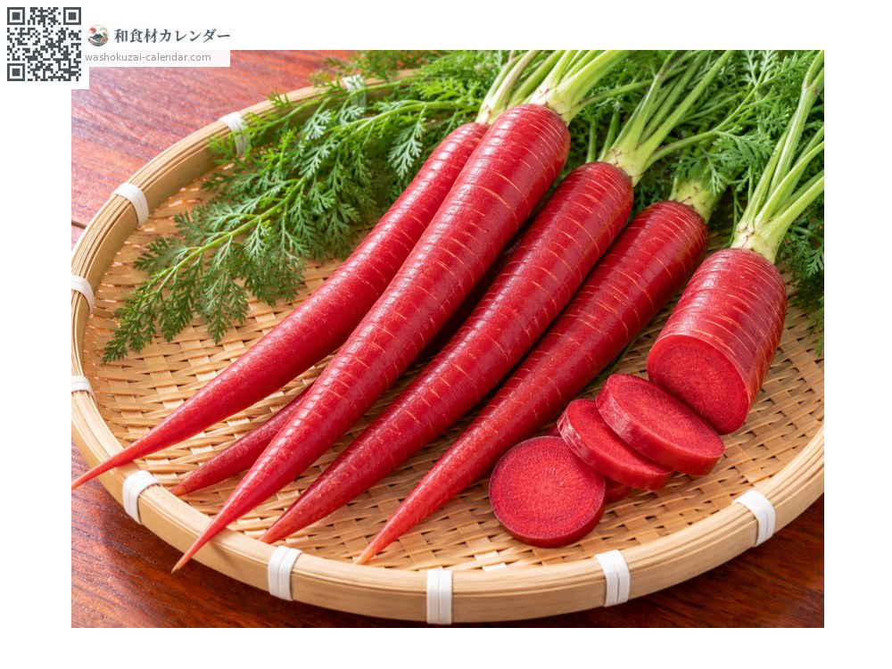
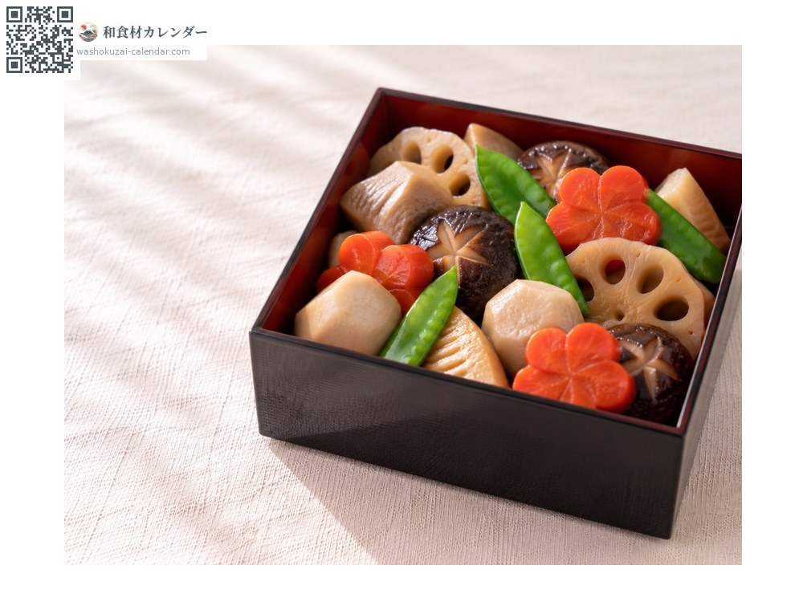
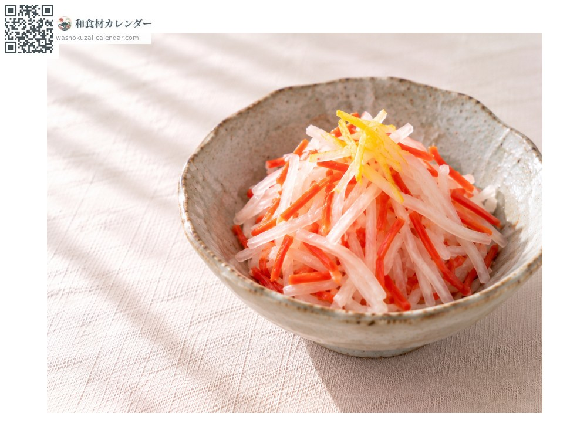
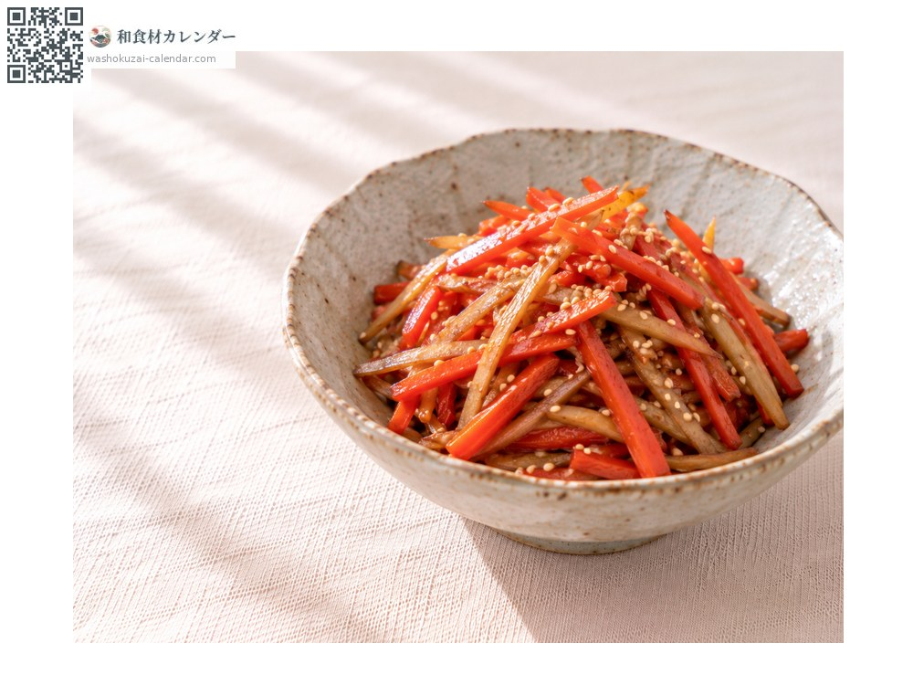
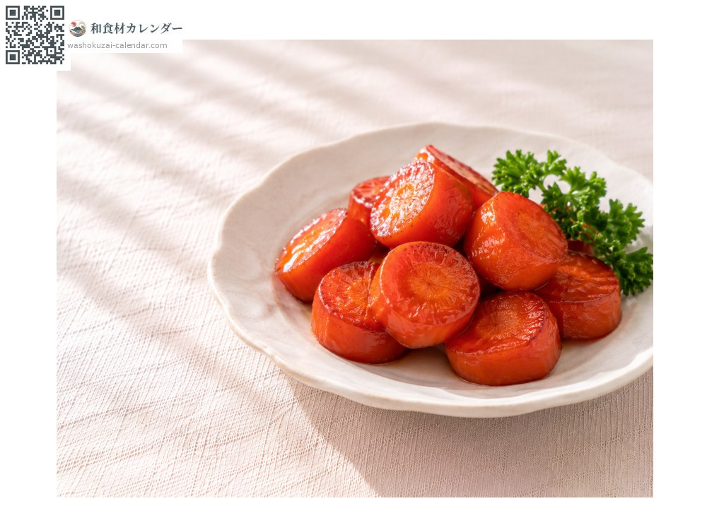

Kintoki carrot
金時人参 きんときにんじん kintokininjin
Also known askintokininjin, ninjin
At its best in Jan, Feb, Dec

When it is at its best
In seasonAvailable
How to cook

Nishime
Cut into plum-blossom shapes and simmered; essential in the New Year box.

Kohaku namasu
Shredded with daikon and dressed in sweet vinegar.

Kinpira
Shredded with burdock and stir-fried in sesame oil.

Glazed
Cooked glossy in butter and sugar.
How to choose
Deep red, smooth skin with few root hairs.
Storage
Wrap in newspaper and stand it upright in the vegetable drawer.
Main areas
Good to know
An Eastern-type carrot that came from China in the Edo period. It is named after Sakata no Kintoki, a red-faced folk hero. Its red colour comes from lycopene, the same pigment as in tomatoes. Sweet and firm when cooked, it is used in New Year dishes, especially in the Kansai region. Kagawa grows much of Japan's crop.